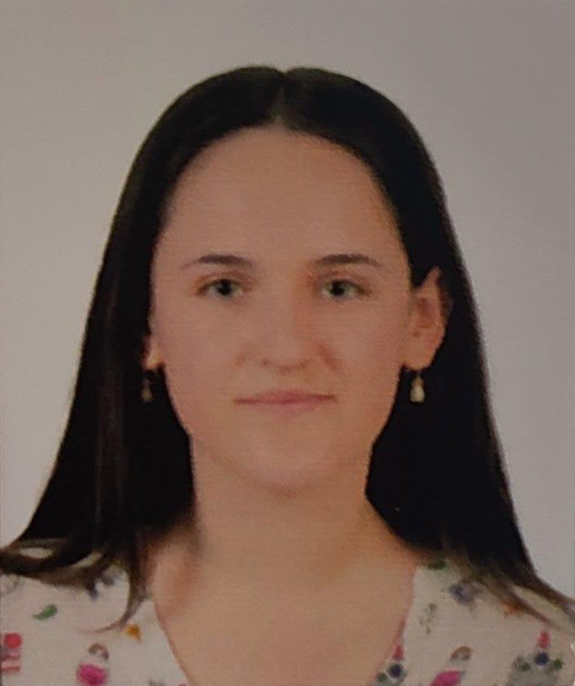

2023630167

SEGD030623MVZRRMA3
DAMARIS PAULINA SERRALTA GARCIA
INGENIERÍA EN SISTEMAS COMPUTACIONALES
ESCUELA SUPERIOR DE CÓMPUTO (ESCOM)
Clave del Centro de Trabajo (CCT):
09DPN0053X
Inscrito
en el periodo escolar actual.
Turno:
Matutino